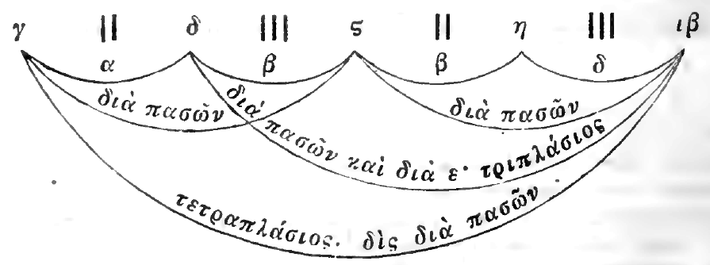

Chapter 26: Musical Consonances & Philolaus’s Cube as Geometric Harmony — Greek (Hoche 1866)¶
Ἀριθμητικὴ Εἰσαγωγή, Book II, Ch. 26 (ed. R. Hoche, Teubner, 1866)
κϚ. Τὸ δὲ πρός τι ἐπέγνωμεν ἐν τῇ τοῦ ὄντος ἀνωτέρω φρασθείσῃ διαιρέσει τῆς ἁρμονικῆς ἴδιον θεωρίας, ἀλλὰ καὶ οἱ μουσικοὶ τῶν ἐν ἁρμονίᾳ συμιφωνιῶν λόγοι ἐν ταύτῃ μᾶλλον εὑρίσκονται τῇ μεσότητι· στοιχειωδέστατος μὲν ὁ διὰ τεσσάρων ἐν ἐπιτρίτῳ λόγῳ, ὡς δ πρὸς γ, ὅρος πρὸς ὅρον ἐν τῷ κατὰ τὸν διπλάσιον ὑποδείγματι ἢ διαφορὰ πρὸς διαφορὰν ἐν τῷ κατὰ τὸν τριπλάσιον, τοῦ γὰρ Ϛ πρὸς β ἢ πάλιν τοῦ Ϛ πρὸς γ αὗται αἱ διαφοραί· μετὰ δὲ τοῦτον εὐθύς ὁ διὰ πέντε ὑπάρχων ἡμιόλιος τοῦ γ πρὸς β ἢ πάλιν τοῦ Ϛ πρὸς δ, ὅρου πρὸς ὅρον· εἶτα τούτων ἀμφοτέρων σύστημα τοῦ τε ἡμιολίου καὶ τοῦ ἐπιτρίτου ὁ διὰ πασῶν ἐφεξῆς αὐτοῖς κείμενος, ἐν διπλασίῳ ὑπάρχων λόγῳ, ὡς ϛ πρὸς γ ἐν ἀμφοτέροις ὑποδείγμασιν, ὅρος πρὸς ὅρον· ἢ ὁ ἐπὶ τούτῳ διὰ πασῶν ἅμα καὶ διὰ πέντε, τριπλάσιον σώζων ἀμφοτέρων ἄμα τὸν λόγον, σύστημα ὑπάρχων διπλασίου ἄμα καὶ ἡμιολίου, ὥσπερ τοῦ Ϛ πρὸς β, ὅρου πρὸς ὅρον, ἐν τῷ κατὰ τὸν τριπλάσιον ὑποδείγματι, καὶ πάλιν διαφορὰς πρὸς διαφορὰν ἐν τῷ αὐτῷ, ἐν δὲ τώ κατὰ τὸν διπλάσιον ὅρου μεγίστου πρὸς διαφορὰν αὐτοῦ καὶ τοῦ μέσου ἢ διαφορᾶς τῶν ἄκρων πρὸς διαφορὰν τῶν ἐλαττόνων· τελευταῖον δὲ καὶ μέγιστον σύμφωνον τὸ λεγόμενον δὶς διὰ πασῶν ὡςανεὶ δὶς διπλάσιον, ἁπάρχον δὲ ἐν λόγῳτετραπλασίῳ, ὡς ὁ μέσος ὄρος τῆς ἐν διπλασίοις πρὸς τὴν τῶν ἐλαττόνων διαφορὰν ἢ ἡ τῶν ἄκρων διαφορὰ τῆς ἐν τριπλασίοις πρὸς τὴν τῶν ἐλαττόνων.
Τινὲς δὲ αὐτὴν ἁρμονικὴν καλεῖσθαι νομίζουσιν ἀκολούθως Φιλολάῳ ἀπὸ τοῦ παρέπεσθαι πάσῃ γεωμετρικῇ ἁρμονίᾳ, γεωμετρικὴν δὲ ἁρμονίαν φασὶ τὸν κύβον ἀπὸ τοῦ κατὰ τὰ τρία διαστήματα ἡρμόσθαι ἰσάκις ἶσα ἰσάκις· ἐν γὰρ παντὶ κύβῳ ἥδε ἡ μεσότης ἐνοπτρίζεται, πλευραὶ μὲν γὰρ παντὸς κύβου εἰσὶν ιβ, γωνίαι δὲ η, ἐπίπεδα δὲ Ϛ· μεσότης ἄρα ὁ η τῶν Ϛ καὶ τῶν ιβ κατὰ τὴν ἁρμονικήν· ὡς γὰρ οἱ ἄκροι πρὸς ἀλλήλους, οὕτως ἡ τοῦ μεγίστου παρὰ τὸν μέσον διαφορὰ πρὸς τὴν τοῦ μέσου παρὰ τὸν ἐλάχιστον διαφοράν, καὶ πάλιν ὁ μέσος ἄλλῳ μὲν ἑαυτοῦ μέρει μείζων ἐστὶ τοῦ ἐλάττονος, ἄλλῳ δὲ ἐλάττων τοῦ μείζονος, ἐνὶ μέντοι καὶ τῷ αὐτῷ αὐτῶν τῶν ἄκρων μέρει καὶ μείζων καὶ ἐλάττων ὑπάρχει· καὶ ἑτέρως οἱ ἄκροι συντεθέντες καὶ ὑπὸ τοῦ μέσου πολυπλασιασθέντες διπλάσιονἀποτελοῦσι τοῦ ὑπὸ τῶν ἄκρων πρὸς ἀλλήλους γινομένου· καὶ ἡ μὲν διὰ τεσσάρων ἐστὶ τοῦ η πρὸς τὸν Ϛ, ἐπίτριτος γάρ, ἡ δὲ διὰ πέντε τοῦ ιβ πρὸς τὸν η, ἡμιόλιος γάρ, ἡ δὲ διὰ πασῶν ἀμφοῖν οὖσα σύστημα ἡ τοῦ ιβ πρὸς τὸν Ϛ, διπλασία γὰρ, ἡ δὲ διὰ πασῶν ἄμα καὶ διὰ πέντε τριπλάσιος οὖσα ἡ τῶν ἄκρων διαφορὰ ὑπάρχει πρὸς τὴν τῶν ἐλαττόνων, ἡ δὲ δὶς διὰ πασῶν ὁ μέσος ὅρος πρὸς τὴν ἑαυτοῦ καὶ τοῦ ἐλάττονος διαφοράν· οἰκειοτάτως ἄρα ἁρμονικὴ προςωνομάσθη.

